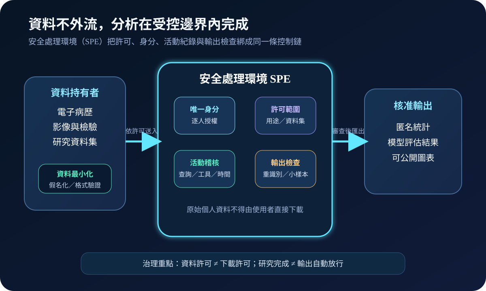
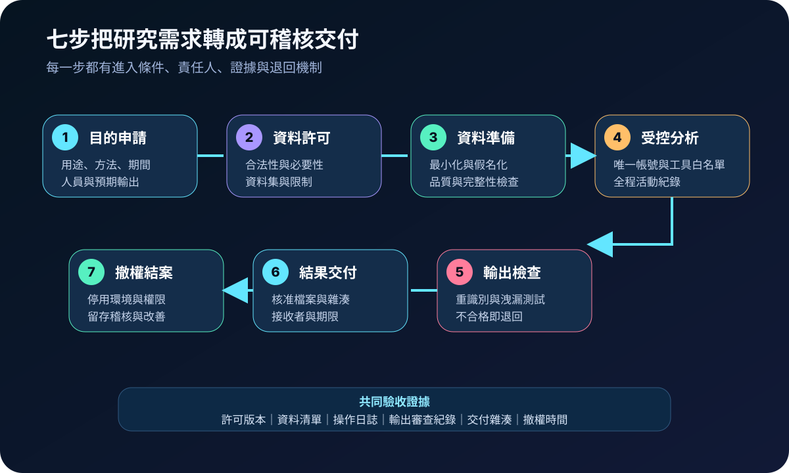
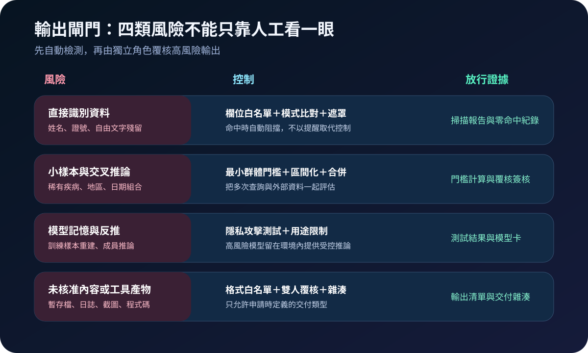

醫療資安國際觀察 · 2026-10-07
醫療資料再利用如何不把個資帶出安全環境：從資料許可到輸出檢查
作者：Dr. William｜醫療資訊與資安治理實務工作者
醫療資料再利用的安全目標，不是把資料交付流程搬到雲端，而是讓核准使用者在受控環境內完成分析，並將任何離開環境的結果再視為一次獨立風險決策。
名詞解釋：資料許可、SPE 與輸出檢查
資料許可界定核准目的、資料範圍、人員、期間與輸出。安全處理環境（Secure Processing Environment, SPE）是隔離的分析邊界，限制使用者、工具、網路、匯入與下載。輸出檢查則針對表格、圖表、程式碼、模型及日誌評估直接識別、小樣本推論、模型記憶與未核准內容，通過後才交付。
國際現況與適用邊界
ENISA 於 2026 年 10 月 7 日舉辦第 11 屆 eHealth Security Conference，議程聚焦醫療部門 NIS2 落實、EHDS、醫院資安行動計畫與持續變動的威脅情勢。這是當日政策與實務交流議程，不能當作新增法定要求或會議結論。
歐盟 EHDS Regulation (EU) 2025/327 第 73 條要求二次利用依資料許可透過安全處理環境存取，限制未授權讀取、複製、修改或移除，採唯一身分並保存可識別活動紀錄；下載要求須經檢查，僅允許非個人電子健康資料離開環境。歐盟委員會 2026 年 FAQ 說明，多數二次利用規定預計自 2029 年 3 月 26 日分階段適用，安全處理環境等關鍵技術細節的施行文件目標期限為 2027 年 3 月 26 日。
台灣適用原則：EHDS 與 NIS2 是歐盟法制，不是台灣醫療機構的直接法定義務。可借鏡的控制方法是把資料申請、合法性與倫理審查、最小化、隔離分析、輸出覆核、稽核及撤權串成閉環；實際處理仍須依台灣法令、主管機關要求、研究倫理與院內政策辦理。
對台灣醫療機構的影響
傳統「去識別後交付檔案」會把資料控制責任集中在交付前，後續複製、再分享、工具上傳與成果輸出較難持續驗證。安全處理環境將控制延伸到使用期間，但也增加身分治理、工具供應鏈、運算成本、輸出審查、日誌留存與緊急停用等營運責任。
規劃：先定義環境、角色與驗收條件
範圍應涵蓋資料持有者、申請者、資料存取審查、研究倫理、個資、資安、平台維運及輸出覆核。驗收至少包含：每個工作空間綁定一份有效許可、資料集與使用者可追溯、工具與對外連線受控、操作日誌不由研究者自行刪除、輸出有明確格式與風險門檻、許可到期可自動撤權及封存。
實作：七步建立可稽核閉環
- 目的申請：定義用途、方法、資料必要性、人員、期間與預期輸出。
- 資料許可：確認法令、倫理、契約與院內授權，記錄限制條件。
- 資料準備：最小化、假名化、品質檢查並保存資料版本。
- 受控分析：採唯一帳號、最小權限、工具白名單與活動紀錄。
- 輸出檢查：自動掃描識別資訊、小樣本與未核准格式，高風險結果由獨立角色覆核。
- 結果交付：只交付核准版本，保留接收者、時間、雜湊與限制。
- 撤權結案：停用工作空間、封存證據、刪除暫存並追蹤例外。

風險：環境封閉不代表輸出安全
常見失敗包括多人共用帳號、允許任意套件或雲端工具、日誌與資料同權限管理、只檢查 CSV 卻忽略圖片與模型、固定小樣本門檻未考慮交叉推論，以及急件由同一人申請、審查與放行。緩解方式是職務分離、輸入輸出代理、格式白名單、累積查詢風險檢查、模型隱私測試、雙人覆核及獨立稽核儲存。

可執行清單
- 每個工作空間是否綁定有效許可、資料版本、使用者與期限？
- 是否禁止共用帳號，並限制管理者直接查看研究資料？
- 工具、套件、網路連線與外部 AI 服務是否有明確白名單？
- 活動日誌是否寫入研究者無法刪除的獨立儲存？
- 輸出是否同時檢查識別資訊、小樣本、模型隱私與格式？
- 到期後是否自動撤權、封存證據並驗證暫存資料已清理？
來源
- ENISA｜11th eHealth Security Conference（活動：2026-10-07；查閱：2026-10-07）
- EUR-Lex｜Regulation (EU) 2025/327 on the European Health Data Space（發布：2025-03-05；查閱：2026-10-07）
- European Commission｜Frequently Asked Questions on the European Health Data Space（更新：2026-03-26；查閱：2026-10-07）
- European Commission｜EHDS implementation dialogue（會議：2026-06-10；查閱：2026-10-07）
內容說明
本文依健康台灣深耕計畫相關治理內容整理，並參考 ENISA、EUR-Lex 與歐盟委員會公開資料，提出醫療資料再利用的安全處理、輸出審查與結案驗收框架；不把歐盟規定視為台灣法定義務，也不取代主管機關公告、研究倫理審查、個資影響評估、契約或法律意見。